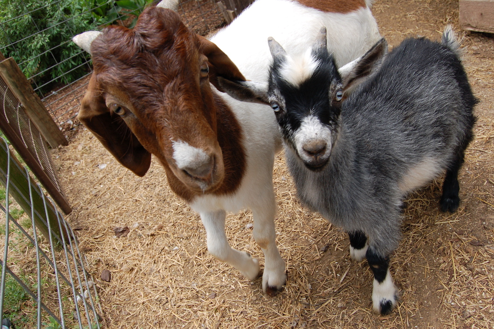

MCC conversion test
This is a page for testing conversion tracking for conversion defined at the MCC level.
Your visit has been tracked.

Now you can additionally make one of two other conversions:
Make Purchase
Sign up